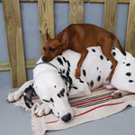
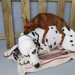

Nuestras instalaciones están registradas como Núcleo Zoológico Autorizado Nº1234 por la Consejería de Desarrollo Rural, Ganadería, Pesca y Biodiversidad de Andalucia.
La residencia cuenta con amplias instalaciones perfectamente equipadas para mantener a los animales entretenidos y seguros. Además, nuestro personal se asegura de que los animales reciban una dieta saludable y equilibrada, y de que tengan acceso a zonas de juego y ejercicios supervisados. Nuestra residencia es el lugar perfecto para dejar a tus mascotas con total tranquilidad mientras te encuentras fuera de casa.
.jpg)
El funcionamiento básico de nuestra guardería de día canina es muy similar a una guardería para niños. Dejas a tu mascotas con nosotras cuando no puedes atenderlo. Estará en un lugar donde puede jugar, socializar, hacer ejercicio, salir al parque con más amigos y recibirá todos los cuidados necesarios en una guardería para perros mientras tú trabajas.
Cuando recojas a tu mascota de la guardería lo encontrarás relajado y contento tras haber estado todo el día jugando con amigos. Disfruta de los beneficios de una guardería de mascotas y no volverás a agobiarte por no haberle podido prestar la suficiente atención o sacado a la calle todo lo que necesitaría. Será una mascota más feliz.
Nuestras salas de juego para perros son espaciosas y seguras, en ellas los perros estarán juntos en grupos seleccionados por tamaño, temperamento y edad. Un miembro de nuestro equipo de cuidadores de perros estará en todo momento con ellos para guiar los juegos y vigilar que ningún perro sea excluido.
 

La tarifa para aquellos que vienen todos los días de la semana.

Esta es la tarifa ideal si necesitas guardería regularmente pero no todos los días de la semana. Tienen una caducidad de tres meses desde su fecha de compra.
Si te surge un imprevisto o quieres dejar a tu perro algún día de manera puntual:
Si quieres dejar a tu perro de manera puntual pero no tantas horas como un día completo o medio día:
Las familias numerosas tienen un descuento del 10% en todas nuestras tarifas para el segundo hermano.
Ofrecemos la posibilidad de darles la comida a medio día, de uno en uno para mayor tranquilidad de tu perro. La comida nos la tenéis que facilitar vosotros de su pienso habitual para no causar trastornos gastrointestinales por cambios bruscos en la dieta.
Si tu perro está en tratamiento veterinario y le toca la medicina mientras está con nosotras, no dudes en dejarnos la medicación e indicarnos la pauta para que nosotras se la administremos.
Todas las mascotas que acudan a nuestra guardería deberán pasar un día de prueba. Este día de prueba es gratis y nos sirve para valorar si vuestra mascotas presenta ansiedad cuando te vas y lo dejas con nosotras y si está a gusto con el resto de mascotas de la guardería. Lo normal es que el primer día estén un poco más tímidos, en cuanto ven que volvéis a recogerlo y que es un sitio donde pasarlo bien, se quedarán felices.
Copyright 2023 © Residencia para Mascotas Valencan